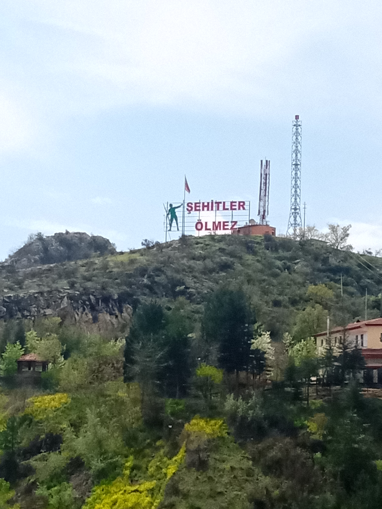

Hani 18imizde beraber dunyayi gezecektik? zaten benim gibi birini ne yapasin ki haklisin. senin bir suru arkadasin cevren var benim bir tek sen vardin. birisiyle konusurken mutlu oldugum tek insansin. azarlasanda kavga etsen de hep barisirdik gercekten ozur dilerim benim gibi birini tanidigin icin. senle konusurken kendimi okadar cok iyi hissediyordum ki. ozur dilerim blyle biri olduğuma.herseyi mahveden benim seni kaybetmekten hep cok korktum o yuzden. neyse bir kac fotograf koyayim bari.
